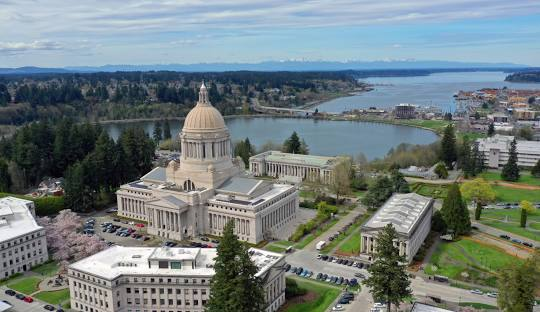
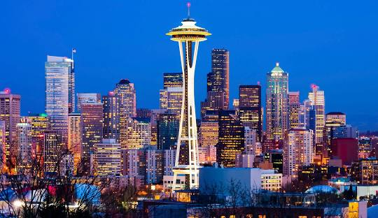
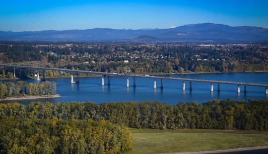

Olympia
Olympia is the capital of the U.S. state of Washington and the county seat of Thurston County.
Seattle
Seattle, a city on Puget Sound in the Pacific Northwest, is surrounded by water, mountains, and evergreen forests.
Vancouver
Vancouver is a city on the north bank of the Columbia River in the U.S. state of Washington.